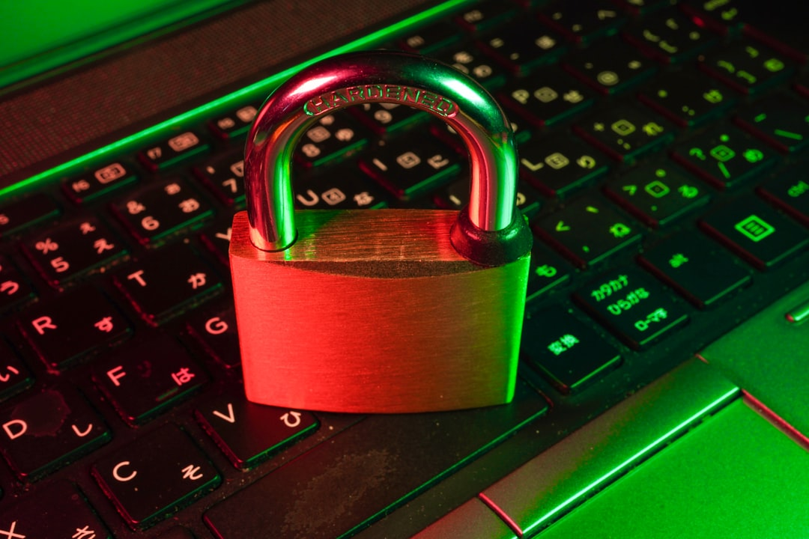

VPN 2026: why use one and which one to choose?
Streaming, travel, security, public Wi-Fi: what a VPN is really for in 2026 and how to choose without paying too much.
Photo: Unsplash
We hear about VPNs everywhere. But realistically, what's the use of it for someone who is not a cybersecurity expert? Many people pay for a subscription without really knowing what they are buying. And others miss very useful uses because no one has explained it to them simply.
A VPN (virtual private network) is a tool that encrypts your internet connection and sends it through a server located elsewhere in the world. Concretely, it hides your IP address, it secures your data on Wi-Fi networks, and it allows you to virtually geolocate yourself in another country.
In 2026, the three main uses for the general public are: secure your data, bypass geographic restrictions, and save money while traveling. And yes, a VPN can save you money.
What is it really for?
🔐 Security on public Wi-Fi
This is the best known use. When you connect to the Wi-Fi of a hotel, airport or café, anyone on the same network can potentially intercept what you're doing. A VPN encrypts all your traffic: no one can see your passwords, emails or credit card numbers.
📺 Streaming and blocked content
Are you traveling and want to watch Netflix France? Or the opposite: do you want to access the US catalog of a streaming service? A VPN allows you to virtually locate yourself in another country. Many expatriates and travelers use it to find their usual content.
✈️ Savings on travel
It's less known but very useful: hotel, flight or car rental booking sites sometimes display different prices depending on the country from which you are consulting. By using a VPN, you can compare prices from multiple countries and sometimes find cheaper deals. For Booking, differences can range from 10 to 30% depending on the origin.
🛡️ Privacy protection
Websites, advertising agencies and your ISP (service provider) track your online activity. A VPN limits this tracking by hiding your IP address and encrypting your data. It's a useful addition to an ad blocker.
🔒 Protect your data now
NordVPN, one of the market leaders: encryption, 7,300+ servers in 118 countries, no logs.
🔥🔥 -77% + 1 month FREE →11,59€ €2.87/month — 30 days money back guarantee
How to choose a VPN without getting scammed
The VPN market is full of marketing promises. The criteria that really matter are:
- Logs policy : un bon VPN ne conserve aucune trace de ton activité. This is criterion number 1.
- Number of servers The more servers there are in more countries, the better for speed and geolocation.
- Simple apps : si l'app est trop technique, tu ne l'utiliseras pas. Priority to something that works in one click.
- Speed : certains VPN ralentissent beaucoup la connexion. The best lose less than 15% of throughput.
- Price : be wary of very aggressive offers. Un bon VPN coûte entre 3 et 7€/mois en engagement long.
NordVPN in brief
NordVPN is one of the best known and most used. Launched in 2012, it belongs to Nord Security (Panama, outside the Five Eyes alliance).
- ✅ 7,300+ servers in 118 countries
- ✅ Strict no-logs policy
- ✅ Windows, Mac, Android, iOS, Linux applications
- ✅ Double VPN (encryption via two servers)
- ✅ Built-in threat protection
- ✅ Up to 6 simultaneous devices
- ✅ 30 days money back guarantee
And if you also want to secure your passwords, Nord Security offers NordPass, a reliable password manager that complements the subscription well.
What budget for a VPN?
- Small budget (€2.87/month) : offer long term NordVPN at -77% + 1 month offered. Best value for money in the market.
- Flexible use (~7-10€/month) : monthly or annual subscription. More expensive but without a long commitment.
- Free = avoid : Free VPNs almost always have a counterpart (resale of data, limited bandwidth, advertising). In the best case, they're just very slow.
My advice: if the VPN is a regular tool for you (travel, public Wi-Fi, streaming), take out a long-term subscription from a serious player. The cost per month becomes ridiculous and the tool is always there when you need it.
Mistakes to avoid
- Get a free VPN : you are the product, not the customer. Données revendues, logs conservés, vitesse bridée.
- Paying too much for a monthly subscription : long-term offers divide the price by 3 or 4.
- Believe that a VPN makes you 100% anonymous : it is a protection tool, not a cape of invisibility. Complete with a private browser and password manager.
- Choose solely on price : a VPN at 1€/month that keeps logs, it is worse than no VPN at all.
My EuroMalin advice
If you travel, use public Wi-Fi, or simply want to regain control of your privacy, a VPN is a worthwhile investment. For ~€3/month in a long-term offer, the protection/price ratio is excellent. And if you want to push security, add NordPass to manage your passwords.
Before subscribing, always look at current promotions on long-term offers — that's where the best prices are hidden.
🔥 Limited offer: -77% + 1 month free
€11.59/month → €2.87/month. 7,300+ servers, 118 countries, no logs.